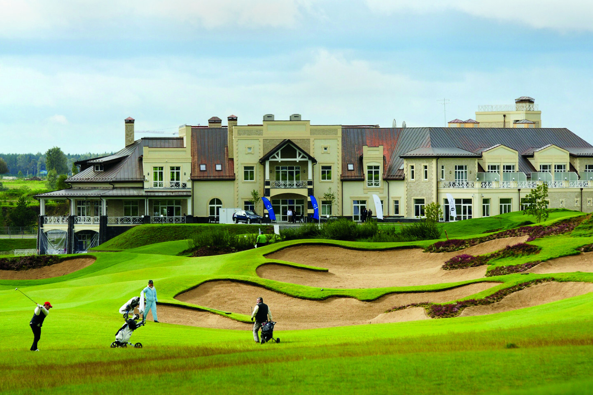
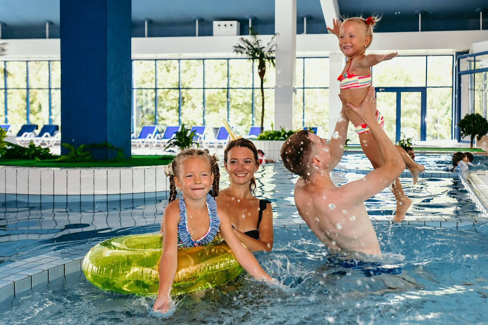

Всё то, ради чего обычно уезжают на выходные, — за десять минут от участка.
Гольф-поле, марина, спа, рестораны и отели — всё это курорт Завидово, в десяти минутах от участка. Москва при этом остаётся в часе езды по М-11. Сюда приезжают на утро, на обед или на вечер, не собирая сумку.

Клубный дом стоит прямо над фервеем: с террасы видно, как заканчивают лунку. Поле открыто с апреля по ноябрь, и восемь месяцев в году партию назначают на будний вечер, а не выкраивают под неё выходные.

Спа
Вечерняя часть того же дня: полотенца, свечи, тишина. Возвращаться после этого в город не нужно.

Бассейн
Крытая чаша с панорамными окнами: шезлонги вдоль воды, детская часть рядом со взрослой. Погода перестаёт решать, купаться сегодня или нет.

Терраса выходит прямо на воду: столы у перил, между ними белые шторы, за перилами река. Обед здесь длится дольше запланированного: дом в десяти минутах, торопиться некуда.

Купола видно с моста зимним вечером. Аквапарк открылся 21 ноября 2025 года, площадь — более 15 000 м².
Двенадцать мест, собранных по поводу, а не по категории: день на воде, чем занять детей, где поесть, куда выдохнуть. Часы и адреса собраны здесь, чтобы не искать их в дороге.
Часы работы и цены — по данным самих площадок. Перед поездкой лучше позвонить: сезонные места меняют расписание.
Оставьте имя и телефон — перезвоним в течение 15 минут в рабочее время и пришлём свободные участки.
Заявка принята, менеджер свяжется с вами в течение 15 минут.